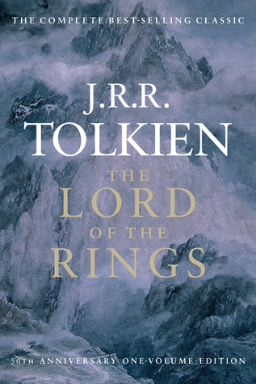
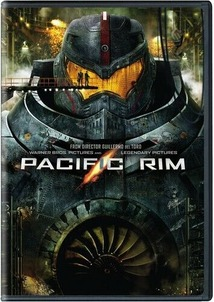
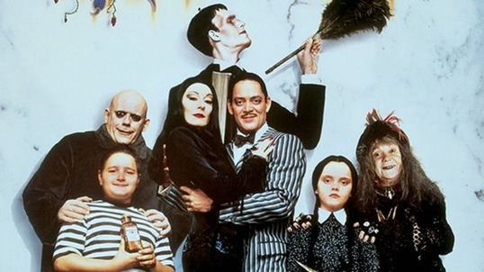

About
In my free time, I enjoy indulging in my favorite indoor activities. Watching movies and reading books are my top choices, and I find comfort in engaging in these activities, particularly during cold winter days while cozied up on the couch. I am not particularly open to trying new things, and prefer to stick with what I know and enjoy. My indoor hobbies provide me with a sense of comfort and relaxation, and I find them to be a great way to escape from the demands of daily life. In conclusion, I have a conservative approach to my hobbies and enjoy spending my leisure time reading and watching movies. These activities bring me joy and relaxation, and I find myself looking forward to them each day
My Favourite Book

The Lord of the Rings holds a special place in my heart as my favorite book. It captivates me with its epic tale of adventure, history and folklore. The grand narrative and masterful storytelling transport me to a world filled with magic and wonder. The quote, "History became legend. Legend became myth," from both the novel and movie versions, perfectly encapsulates the timelessness and mythical quality of the story. I am enamored with its epic scope and the way it so beautifully weaves together history, legend, and myth.
My Favorite Movies/TV


My passion for these movies or TVs is not rooted in an appreciation for the art form itself, but rather in a love for the themes that these films explore. The romanticism of its opening declaration, "Space: the final frontier. These are the voyages of the starship Enterprise. Its five-year mission: to explore strange new worlds. To seek out new life and new civilizations. To boldly go where no man has gone before" sparked my fascination with the "Star Trek" franchise. The spectacle of towering mechanical behemoths in "Pacific Rim" captured my imagination, while the iconic monsters of "Shin Godzilla" and the quirky charm of "The Addams Family" touched me in their own ways.